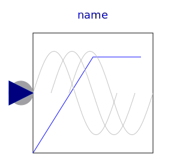
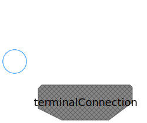
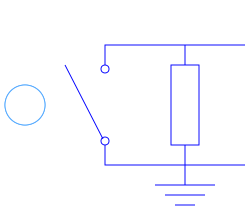

Utilities for quasi static fundamental wave machines
| Name | Description |
|---|---|
|  VfController | Voltage-Frequency-Controller |
|
|
Terminal box Y/D-connection |
|  MultiTerminalBox | Terminal box Y/D-connection |
|  SwitchedRheostat | Rheostat which is shortened after a given time |
|
|
Current controller |